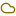

Datos dispersos
Cada centro usa su propio formato y los datos no se pueden comparar.
Un formulario común, datos protegidos y resultados en tiempo real. Sin planillas, sin Google Forms y sin depender de informática.
Cupos fundadores abiertos hasta el 31 de diciembre de 2026

Datos ficticios · solo ilustrativosCada hospital registra a su manera: una planilla del residente, un Google Forms que nadie mantiene, un cuaderno en la urgencia. Cuando el residente rota, el registro se pierde. Y cuando se quiere comparar entre centros, las variables no coinciden.
Cada centro usa su propio formato y los datos no se pueden comparar.
Planillas compartidas por enlace con información de pacientes. Gigantes tecnológicas podrían estar usando esos datos.
Meses de trabajo que nunca llegan a un congreso o una revista.
El equipo de cirugía de un hospital registra sus pacientes de trauma en Hando Science desde enero de 2026. Así se ven sus indicadores en el dashboard.
Datos ficticios · solo ilustrativos“Con Hando Science puedo ver datos relevantes en tiempo real, datos que necesito”Dr. Arellano · Cirujano Intensivista - Jefe UPC de un hospital regional El Dr. Arellano colabora con Hando.
Formulario de trauma estandarizado: mecanismo, lesiones por segmento, reanimación, procedimientos y desenlace. El ISS se calcula solo.
El dashboard de tu centro se actualiza con cada paciente. Sin armar gráficos en Excel.
Exporta tus datos para análisis y, cuando el registro crezca, compárate de forma anonimizada con otros centros.
Desde el 15 de octubre de 2027 rige la Ley 21.719 de protección de datos personales, que trata los datos de salud como datos sensibles. Un Google Forms compartido por enlace deja la responsabilidad en quien lo creó. Hando Science está pensado para que tú y tu establecimiento cumplan.
Cada usuario ve solo lo que le corresponde; un centro nunca ve los datos de otro.
Datos cifrados en tránsito y en reposo.
Queda registro de quién crea, edita o exporta cada dato.
Hando no solicita datos que permitan identificación de pacientes (RUT, nombre, etc).
Firmamos con cada cliente los términos y condiciones de uso y protección de sus datos.
Exportación completa cuando quieras, sin costo.
Buscamos profesionales que quieran construir con nosotros el primer registro nacional de trauma de Chile. Los que se sumen antes del 31 de diciembre de 2026 serán Champions Fundadores.
✓ Precio congelado por 12 meses
✓ Formulario de trauma listo y acompañamiento en la primera carga
✓ Tu centro y su coordinador reconocidos en las publicaciones del registro
✓ Un lugar en el comité científico del registro
✓ Un coordinador local
✓ Presentar el protocolo a tu comité ético-científico (te acompañamos y te entregamos el protocolo modelo)
Un cirujano o residente con su propio registro
$20.000+ IVA · [al mes / al año]✓ 1 usuario
✓ Formularios del registro
✓ Dashboard
ComenzarEl equipo de trauma de un hospital · Recomendado para Champion Fundadores
$80.000+ IVA · [al mes / al año]✓ Hasta 5 usuarios
✓ De una misma institución
✓ Soporte prioritario
ComenzarHospitales, universidades o sociedades con varios equipos
A convenirSegún alcance del proyecto✓ Usuarios y centros múltiples
✓ Onboarding dedicado
✓ SLA garantizado
ConversemosNo. Hando Science funciona en el navegador, desde el computador o el celular. No hay nada que instalar.
El registro nacional de trauma tendrá un formulario estandarizado. Para otros formularios puedes contratar Hando Science.
Cada centro presenta el protocolo a su comité ético-científico. Te entregamos un protocolo modelo y la descripción técnica de seguridad.
Nos escribes y te ayudamos a migrarlos a la plataforma.
Sí. Puedes retirarte cuando quieras, sólo nos informas y dejas de pagar.
Hando es una startup chilena de tecnología en salud, con el apoyo de:

Déjanos tus datos y te contactamos en menos de 48 horas para mostrarte la plataforma.
ricardo@hando.health · felipe@hando.health